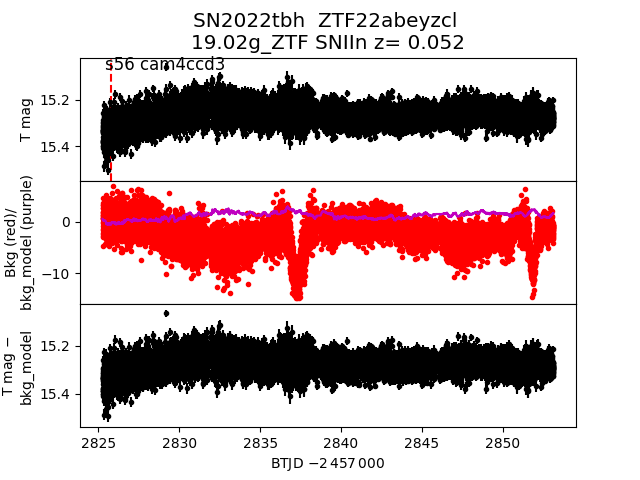

sector56 supernovae (25 total)
Each figure has three panels. The top panel shows the transient light curve, the middle panel shows the local background (estimated in an annulus), and the bottom panel shows a "background-model corrected" light curve. Details about the background model are in the README.
The vertical red line marks the time of discovery reported to TNS. Other useful metadata from TNS is in the figure title.
Note that the top and bottom panel are in magnitudes, while the middle panel is in differential flux units. The magnitudes are calibrated to the flux in the reference image used for image subtraction. Thus, flux from the host galaxy is included in these magnitudes.
3-sigma upper limits are plotted as triangles with no errorbars. A typical limiting magnitude is 19.6 in 30 minutes or 18.4 in 200 seconds (for low backgrounds).
The links allow you to download the light curve data as a text file.
More details in the README.
2022tbh

2022wbm
 2022vsq
2022vsq
 2022wcm
2022ugg
2022wcm
2022ugg
 2022wkj
2022wkj
 2022ufg
2022wen
2022ukm
2022ufg
2022wen
2022ukm
 2022vwd
2022vwd
 2022uwh
2022wlh
2022vih
2022uwh
2022wlh
2022vih
 2022uuy
2022wgb
2022uuy
2022wgb
 2022udk
2022uso
2022udk
2022uso
 2022ubr
2022uda
2022wbo
2022ubr
2022uda
2022wbo
 2022ubd
2022ubd
 2022wbp
2022vxf
2022vpn
2022uhk
2022wbp
2022vxf
2022vpn
2022uhk